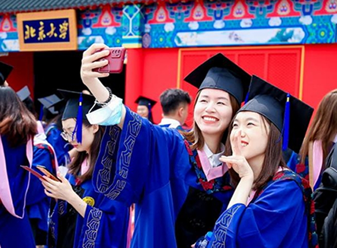
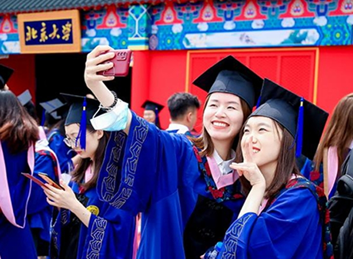
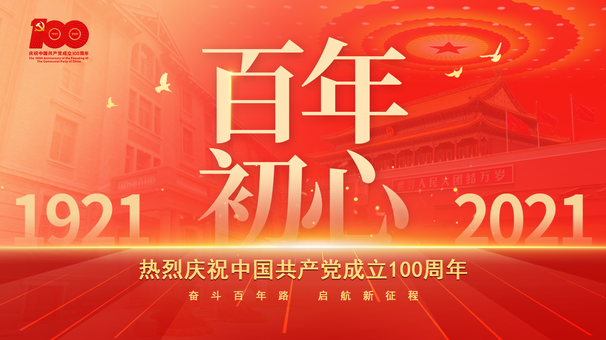
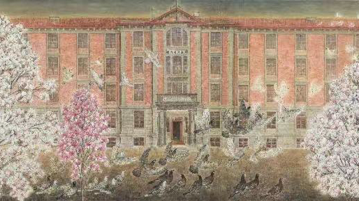

-
京师大学堂与民国初年的北京大学
北京大学创建于1898年，初名京师大学堂，是中国近代史上第一所国立综合性大学。
-
五四前后的北京大学
1916年12月，著名教育家、思想家、民主主义革命家蔡元培出任北京大学校长，对北大进行了卓有成效的改革。众多革新人物和学术大师云集北大，倡导民主与科学精神，弘扬爱国与进步思想，促进新思潮的传播和学术的繁荣，使北大成为新文化运动的中心，五四运动的发祥地，传播马克思主义和创建北方地区中国共产党组织的最初基地。这是北大发展史上一个辉煌时期，奠定了北大的光荣革命传统和优良学术传统。
-
三十年代的北京大学
1927至1929年，北京大学处于动荡之中。奉系军阀攫取北京政权后，实行恐怖统治，悍然杀害了北大教授李大钊等人，把具有民主传统的北京大学视为眼中钉，1927年8月颁令将北京大学与北京其他国立八校合并组成国立京师大学校。
-
西南联合大学时期的北京大学
1937年7月7日，卢沟桥事变爆发。月底，北平、天津相继陷落。9月，奉教育部令，北京大学与清华大学、南开大学南迁至湘，合组长沙临时大学。
-
复员后的北京大学
复员后的北京大学迁回北平原校址。1946年7月，新任校长胡适（蒋梦麟辞去北大校长职务后，1945年9月由胡适接替，胡适到任前由傅斯年代行）宣布北大重要教职员人选。1946年7、8月，北大奉教育部令先后接收了北平临时大学补习班一至四分班及第六分班，1947年8月，北洋大学北平部并入北京大学。
-
新中国成立后十七年的北京大学
1949年10月1日，中华人民共和国成立，北京大学步入新纪元。1949年1月31日，北平和平解放。2月28日，北平军事管制委员会文化接管委员会正式接管北大。5月4日，北大成立校务委员会成立，汤用彤任主席。
-
“文化大革命”时期的北京大学
1966年5月16日，中共中央通过了“五·一六通知”，标志着“文化大革命”的开始。在康生及其妻曹轶欧的策划下，哲学系聂元梓等于5月25日贴出了题为《宋硕、陆平、彭珮云在文化革命中究竟干些什么？》的大字报，诬陷、攻击北京大学党委和北京市委。6月1日，中央人民广播电台根据毛泽东主席的批示，全文播发了这张大字报。当晚，华北局派驻北京大学工作组进校。1966年5月16日，中共中央通过了“五·一六通知”，标志着“文化大革命”的开始。在康生及其妻曹轶欧的策划下，哲学系聂元梓等于5月25日贴出了题为《宋硕、陆平、彭珮云在文化革命中究竟干些什么？》的大字报，诬陷、攻击北京大学党委和北京市委。6月1日，中央人民广播电台根据毛泽东主席的批示，全文播发了这张大字报。当晚，华北局派驻北京大学工作组进校。
-
改革开放时期的北京大学
1976年10月，中共中央一举粉碎“四人帮”，结束了十年“文革”动乱。党和政府对北京大学十分关心，邓小平等中央领导同志多次接见校领导，对北大工作作出重要指示。北京大学遵照党中央拨乱反正的方针，积极开展对教育界“两个估计”的批判；踊跃参加实践是检验真理唯一标准问题的大讨论...
-
步入21世纪的北京大学
创建世界一流大学是北京大学面向21世纪提出的宏伟规划，是世纪之初指导北京大学各项建设的纲领。在国家“211工程”和“985工程”建设经费的支持下，北大以创建世界一流大学为目标，坚持“追求真理、追求卓越、培养人才、繁荣学术、服务人民、造福社会”的理念...创建世界一流大学是北京大学面向21世纪提出的宏伟规划，是世纪之初指导北京大学各项建设的纲领。在国家“211工程”和“985工程”建设经费的支持下，北大以创建世界一流大学为目标，坚持“追求真理、追求卓越、培养人才、繁荣学术、服务人民、造福社会”的理念...
北大 · 要闻

庆祝建党百年暨党史学习教育专题网站
北京大学参加南南合作援助基金和南南合作与发展学院成立5周年纪念活动
不负时代 砥砺前行——北京大学2021年本科生毕业典礼暨学位授予仪式举行
北京大学欢送2021届赴重点行业领域就业毕业生
北京大学召开全校中层正职干部大会
北京大学学位评定委员会召开第152次会议
纪委召开2021年第二季度纪检监察工作情况通报会
燕园街道召开2021年社区“两委”换届暨半年工作总结会
校领导赴怀柔科学城调研

北大红楼：光辉伟业 红色序章
专题 · 网站
查看更多
-
学习贯彻总书记“七一“重要讲话精神
查看更多————
-
决战决胜脱贫攻坚
查看更多————
-
北大研究生教育探索与实践
查看更多————
-
这里视北大
查看更多————
北大 · 人物
查看更多

韩济生：此生唯愿济众生
潘文石：生态保护四十年
通知公告 · 北大声明
查看更多
-
关于“2020中国企业家管理论坛” 有关情况的声明
2020-11-20
-
关于撤销“北京大学国家竞争力研究院”的公告
2020-6-12
-
关于“北京博文思教育咨询中心”有关情况的声明
2020-6-09
媒体 · 北大
查看更多
-
科学社会主义在21世纪焕发蓬勃生机——各国学者聚焦马克思主义发展
-
安钰峰：走好中国特色网络强国建设之路
-
雷明：全面建成小康社会与“三大法宝”